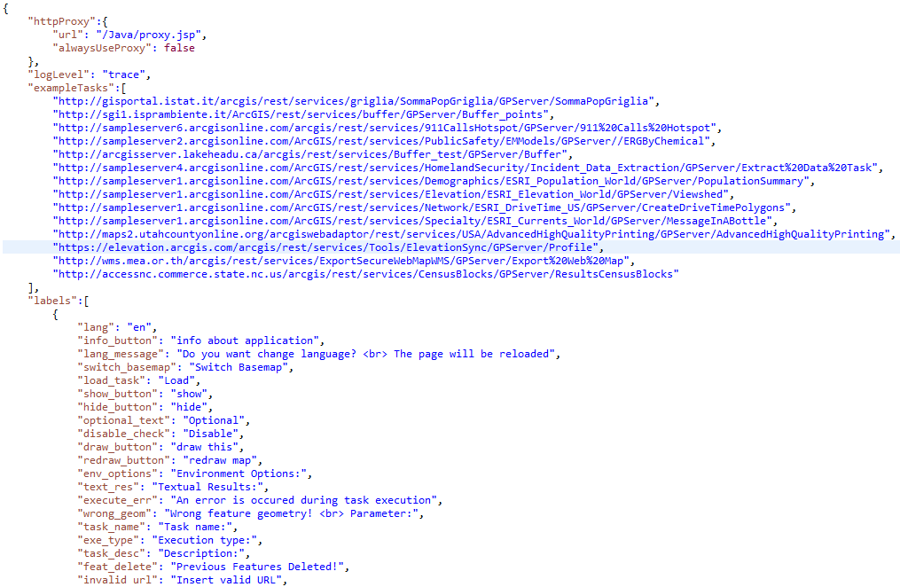

Configuration file
It's possible to configure some application settings changing the json file (config.json)
included on the application main directory.

-
For changing the proxy that is used by the GIG application, it's sufficient to modify the "url" field of "httpProxy"
with the new url.
"alwaysUseProxy" is, instead a boolean variable that forces the system to use always the
proxy for sending the request (true) or only if the request needs that (false).
-
Using the "logLevel" field, you can set the level of log on console.
-
"exampleTasks" variable contains all the proposed task url if you click on the url text field.
-
The "labels" field contains the labels to adapt the shown messages by the application to the current GIG language.